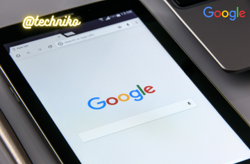

Google India's Most Poppular company

Google, in full Google LLC formerly Google Inc. (1998.2017), American search engine company, founded in 1998 by Sergey Brin and Larry Page, that is a subsidiary of the holding company Alphabet Inc. More than 70 percent of worldwide online search requests are handled by Google, placing it at the heart of most Internet users experience. Its headquarters are in Mountain View, California.
Google began as an online search firm, but it now offers more than 50 Internet services and products, from e-mail and online document creation to software for mobile phones and tablet computers. In addition, its 2012 acquisition of Motorola Mobility put it in the position to sell hardware in the form of mobile phones. Googles broad product portfolio and size make it one of the top four influential companies in the high-tech marketplace, along with Apple, IBM, and Microsoft. Despite this myriad of products, its original search tool remains the core of its success. In 2016 Alphabet earned nearly all of its revenue from Google advertising based on users search requests.
Searching for business
Brin and Page, who met as graduate students at Stanford University, were intrigued with the idea of extracting meaning from the mass of data accumulating on the Internet. They began working from Pages dormitory room at Stanford to devise a new type of search technology, which they dubbed BackRub. The key was to leverage Web users own ranking abilities by tracking each Web sites “backing links”—that is, the number of other pages linked to them. Most search engines simply returned a list of Web sites ranked by how often a search phrase appeared on them. Brin and Page incorporated into the search function the number of links each Web site had; i.e., a Web site with thousands of links would logically be more valuable than one with just a few links, and the search engine thus would place the heavily linked site higher on a list of possibilities. Further, a link from a heavily linked Web site would be a more valuable “vote” than one from a more obscure Web site.
In mid-1998 Brin and Page began receiving outside financing (one of their first investors was Andy Bechtolsheim, a cofounder of Sun Microsystems, Inc.). They ultimately raised about $1 million from investors, family, and friends and set up shop in Menlo Park, California, under the name Google, which was derived from a misspelling of Pags original planned name, googol (a mathematical term for the number one followed by 100 zeroes). By mid-1999, when Google received a $25 million round of venture capital funding, it was processing 500,000 queries per day. Activity began to explode in 2000, when Google became the client search engine for one of the Webs most popular sites, Yahoo!. By 2004, when Yahoo! dispensed with Googles services, users were searching on Google 200 million times a day. That growth only continued: by the end of 2011 Google was handling some three billion searches per day. The companys name became so ubiquitous that it entered the lexicon as a verb: to google became a common expression for searching the Internet.
To accommodate this unprecedented mass of data, Google built 11 data centres around the world, each of them containing several hundred thousand servers (basically, multiprocessor personal computers and hard drives mounted in specially constructed racks). Googles interlinked computers probably number several million. The heart of Googles operation, however, is built around three proprietary pieces of computer code: Google File System (GFS), Bigtable, and MapReduce. GFS handles the storage of data in “chunks” across several machines; Bigtable is the companys database program; and MapReduce is used by Google to generate higher-level data (e.g., putting together an index of Web pages that contain the words “Chicago,” “theatre,” and “participatory”).
The extraordinary growth of Google led to internal management problems. Almost from the beginning, investors felt that Brin and Page needed an experienced manager at the helm, and in 2001 they agreed to hire Eric Schmidt as chairman and chief executive officer (CEO) of the company. Schmidt, who previously had held the same positions at the software company Novell Inc., had a doctorate in computer science and melded well with the technocratic impulses of the founders. During Schmidts reign as CEO, Page served as president of products, and Brin was president of technology. The trio ran the company as a “triumvirate” until Page took on the CEO role in 2011, Schmidt became executive chairman, and Brin adopted the title of director of special projects.
The companys initial public offering (IPO) in 2004 raised $1.66 billion for the company and made Brin and Page instant billionaires. In fact, the IPO created 7 billionaires and 900 millionaires from the early stockholders. The stock offering also made news because of the unusual way it was handled. Shares were sold in a public auction intended to put the average investor on an equal footing with financial industry professionals. Google was added to Standard and Poors 500 (S&P 500) stock index in 2006. In 2012 Googles market capitalization made it one of the largest American companies not in the Dow Jones Industrial Average.
Google reorganized itself in August 2015 to become a subsidiary of the holding company Alphabet Inc. Internet search, advertising, apps, and maps, as well as the mobile operating system Android and the video-sharing site YouTube, remained under Google. Separate Google ventures—such as longevity research company Calico, home-products company Nest, and research lab Google X—became separate firms under Alphabet. Page became CEO of Alphabet, Brin its president, and Schmidt its executive chairman. Sundar Pichai, senior vice president of products, became Googles new CEO. Alphabet again reorganized in 2017 to create an intermediate holding company, XXVI Holdings, and to convert Google into a limited liability company (LLC). In 2018 Schmidt stepped down as executive chairman. More changes followed in 2019 as both Brin and Page left their posts as president and CEO, respectively. However, they both remained on Alphabets board of directors. Pichai became CEO of the holding company while retaining that position at Google.
Advertising growth
Googles strong financial results reflected the rapid growth of Internet advertising in general and Googles popularity in particular. Analysts attributed part of that success to a shift in advertising spending toward the Internet and away from traditional media, including newspapers, magazines, and television. For example, American newspaper advertising fell from a peak of $64 billion in 2000 to $20.7 billion in 2011, while global online advertising grew from approximately $6 billion in 2000 to more than $72 billion in 2011.
Since its founding, Google has spent large sums to secure what it has calculated to be significant Internet marketing advantages. For example, in 2003 Google spent $102 million to acquire Applied Semantics, the makers of AdSense, a service that signed up owners of Web sites to run various types of ads on their Web pages. In 2006 Google again paid $102 million for another Web advertisement business, dMarc Broadcasting, and that same year it announced that it would pay $900 million over three and a half years for the right to sell ads on MySpace.com. In 2007 Google made its largest acquisition to date, buying online advertising firm DoubleClick for $3.1 billion. Two years later the company responded to the explosive growth of the mobile applications market with a $750 million deal to acquire the mobile advertising network AdMob. All of these purchases were part of Googles effort to expand from its search engine business into advertising by combining the various firms databases of information in order to tailor ads to consumers individual preferences.
Other services
Googles expansion, fueled largely by keyword-based Web advertising, provided it with a sound footing to compete for dominance in new Web services. One of these was the delivery of video content. In January 2005 Google launched Google Video, which enabled individuals to search the close-captioned text from television broadcasts. A few months later Google began accepting user-submitted videos, with submitters setting the prices for others to download and view the videos. In January 2006 Google Video Store opened, featuring premium content from traditional media companies such as CBS Corporation (television shows) and Sony Corporation (movies). In June 2006 Google began offering premium content for free but with ads.
For all of its marketing advantages, however, Google was unable to overtake the upstart leader in online videos, YouTube. Following its introduction in 2005, YouTube quickly became the favourite site for users to upload small video files, some of which attracted millions of viewers. Unable to generate anything close to the same number of uploads and viewers, Google bought YouTube in 2006 for $1.65 billion in stock. Rather than merge the Web sites, however, Google continued YouTubes operation as a separate entity. In 2012 Google shut down Google Video and moved videos from there to YouTube. That same year, despite estimated revenues of more than $1 billion, Google said that YouTube remained an “investment” and has not said whether the division was profitable.
In 2004 Google began offering a free Web-based e-mail account to select “beta” testers (a beta product being a product not yet in its final form). The service, known as Gmail, was opened to the general public in 2007 while still officially in its beta stage. One of the main appeals of Gmail was that it gave users an e-mail address that was independent of any particular Internet service provider (ISP), thus making it easier to maintain a permanent address. In addition, the service offered an unprecedented one gigabyte (one billion bytes) of free e-mail storage space, though users were also presented with advertisements based on keywords that the Google search engine found in their messages. Google later expanded the amount of free storage space given to users to seven gigabytes and allowed users to rent additional space. In 2007 the company acquired Postini, an e-mail services firm, for $625 million in order to improve Gmails security, especially in Googles efforts to sign up businesses. In 2009 Google removed the beta status of Gmail, increasing its appeal to business users.
In January 2010 Google announced that it had detected a series of sophisticated hacking attacks, originating in China, that were directed at the Gmail accounts of Chinese human rights activists and foreign journalists working in China. In some cases the accounts had been reconfigured to forward all incoming and outgoing e-mail to unfamiliar addresses. Googles immediate response was to change Gmails protocol from the Web standard HTTP to the encrypted HTTPS, which increased security at the expense of speed. The attacks also led Google to threaten to reverse its stance, which allowed the Chinese government to censor its Google.cn site and allow Chinese users to receive unfiltered search results. This brought the company into conflict with the Chinese government and raised the possibility of Googles exiting the Chinese market altogether. In March, Google avoided direct conflict by automatically redirecting Chinese users of Google.cn to its unfiltered Hong Kong site, Google.com.hk. This arrangement continued until Googles government-issued license to operate in China came up for annual renewal at the end of June. At that time Google changed Google.cn so that users could either use the censored Chinese site for services such as music search or manually click on a link to Google.com.hk for Web search. This move conciliated the Chinese government, which renewed Googles license in July 2010.
Before Google was even launched as a company, its founders had worked on digital book projects at Stanford and had always envisioned the day when Internet users would be able to search content in books. In 2004 the company announced Google Print, a project with several major libraries around the world that would begin to make their holdings freely available on the Internet. The company began by scanning public-domain books from the libraries collections, using sophisticated equipment. The digital files were then converted into portable document files (PDFs) that were fully searchable, downloadable, and printable. Works still in copyright appeared only in fragmented “snippet” form. In 2005 the company changed the name of the project to Google Books, and about one million books per year were scanned in its initial years of operation. As of 2012, Google had scanned more than 15 million books.
Meanwhile, groups of authors and publishers filed suit to stop the company from making passages from their copyrighted books available over the Internet. In 2008 Google reached a legal settlement in which the company agreed to pay the groups $125 million for past transgressions, though users could continue to read for free up to 20 percent of each work scanned by Google. In exchange for allowing parts of their works to be read online, the authors and publishers would receive 63 percent of all advertising revenue generated by page views of their material on Googles Web site.
In 2004 Google bought Keyhole Inc., which was partially funded by the Central Intelligence Agencys venture capital arm, In-Q-Tel. Keyhole had developed an online mapping service that Google rebranded in 2005 as Google Earth. This service let users find detailed satellite images of most locations on Earth and also create combinations (known as “mashups”) with various other databases, incorporating details such as street names, weather patterns, crime statistics, coffee shop locations, real-estate prices, and population densities into maps created by Google Earth. While many of these mashups were created for convenience or simple novelty, others became critical lifesaving tools. For instance, in the wake of Hurricane Katrina in 2005, Google Earth provided interactive satellite overlays of the affected region, enabling rescuers to better understand the extent of the damage. Subsequently, Google Earth became a vital tool in many disaster recovery efforts.
created by MR. Lokhande Nisarga Santosh | all rights reserved!